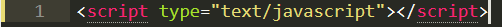

<script>
| Description | Exemple | Résultat de l'exemple |
|---|---|---|
|
La balise <script>est utilisé pour intégrer ou faire référence à un script exécutable. |
 |
Le résultat de cette balise ne peut pas être visualisé.Elle est consommée par le navigateur web et il n'y a pas de rendu visible. |